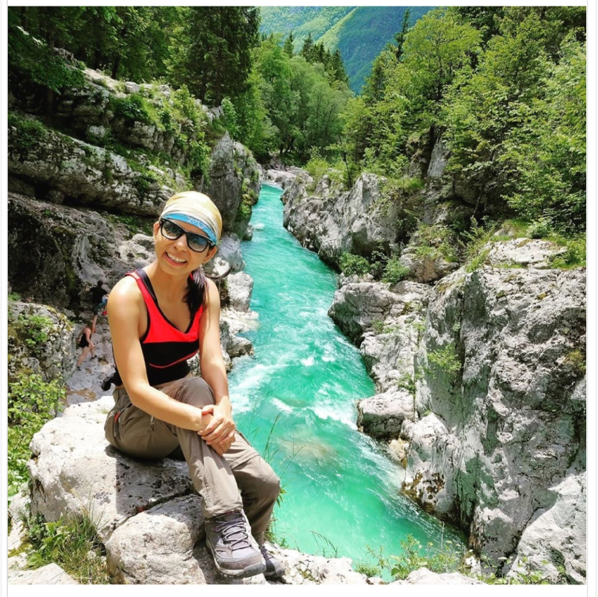
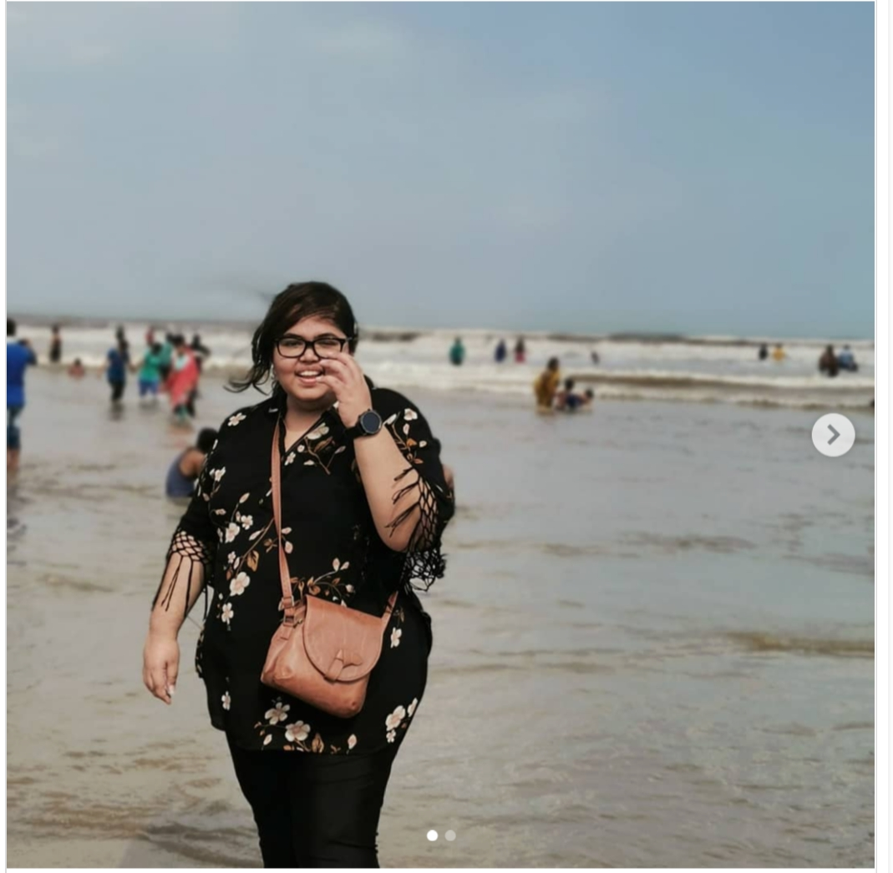
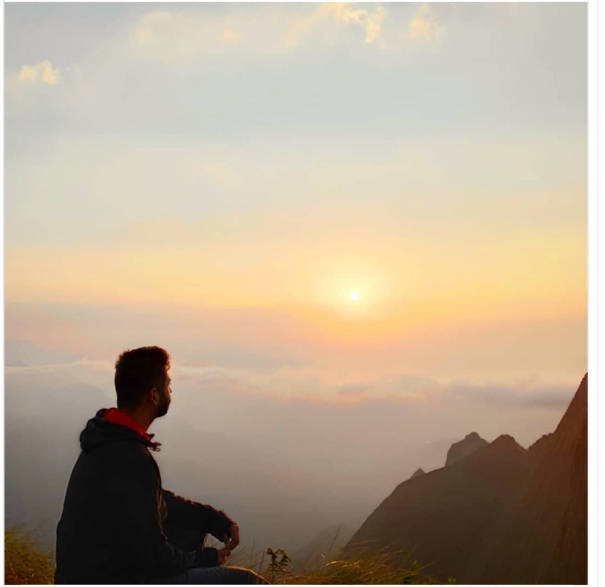

Archana Singh is an award-winning travel writer and speaker. Her impressive storytelling and photography skills have made her travel blog extremely popular around the world. Archana’s Instagram feed is a testimony of her travel adventures.
When talking about top travel and food bloggers, Seema Gurnani is the first name that pops up in the minds of individuals. Starting her journey of ‘Panda Reviewz’ in Vijayawada, this award-winning 24-year-old star quit her comfortable job and started to take the road of thrill and excitement. A zeal for exploring the nooks and new tastes is what keeps this young entrepreneur going!
A restless ball of energy, Ami is a wanderer for life and one of the top Indian travel bloggers. She’s a photography enthusiast and a travel blogger by passion. Ami is a total sucker for heritage destinations, turquoise beaches, and lofty mountains.
One of the top travel bloggers of India, Umang Trivedi loves to explore the remote corners of the world.. He’s an adventurer, mountain lover and an admirer of unspoiled nature. Umang has conquered mountain peaks like Rupin Pass and Stok Kangri.
